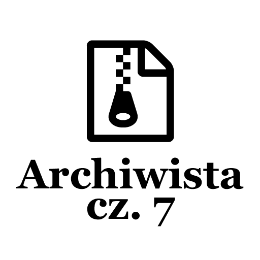

Post archive
Archiwista [cz. 7 – Skrót klawiszowy]

Jedną z kluczowych funkcjonalności aplikacji jest tworzenie kopii zapasowych plików źródłowych. Za każdym razem, gdy użytkownik przyciśnie skrót klawiszowy program ma rozpocząć proces archiwizacji. W tym wpisie przedstawię etapy tworzenia klas, które pozwolą na nasłuchiwanie klawiatury oraz interpretację skrótów.
Nasłuchiwanie
Pierwszą rzeczą potrzebną do rozpoznania skrótu klawiszowego jest jego otrzymanie, więc pierwszą czynnością, jaką zrobiłem było przeszukanie Internetu na temat różnych możliwości nasłuchiwania klawiatury komputera. Jak się okazało istnieje wiele możliwości, jednak każda niosła ze sobą jakieś korzyści i limitacje. Jednak jedna pojawiała się w prawie każdym wpisie, jaki odwiedziłem. Global keyboard hooks pozwalają na słuchanie informacji z kolejki systemu operacyjnego dzięki czemu istnieje możliwość nasłuchiwania wszystkich klawiszy.
W ramach tej aplikacji wybrałem wersję low level keyboard hook poszukując informacji jak używać tego mechanizmu natknąłem się na wpis zawierający gotową klasę umożliwiającą podłączenie się oraz nasłuchiwanie klawiszy. Dlatego użyję tej klasy niestety nie posiada ona wszystkich funkcjonalności, jakich potrzebuję dlatego dokonam modyfikacji. Bez żadnych modyfikacji klasa informuje użytkownika tylko o tym, który klawisz został naciśnięty, ale nie o tym, czy klawisz został puszczony. Aby wykryć skróty klawiszowe będę potrzebował informacji o tym, czy klawisze typu: Alt, Ctrl, Shift są wciśnięte, w tym celu zmodyfikowałem kod dodając dwa eventy OnKeyDown oraz OnKeyUp. Mając informacje, czy dany klawisz jest wciśnięty czy puszczony mogę przystąpić do pisania klasy zarządzającej całością.
/*
* Source:
* http://www.dylansweb.com/2014/10/low-level-global-keyboard-hook-sink-in-c-net/
*
* Modified by: ../../../../index.html
*/
public class LowLevelKeyboardListener
{
private const int WH_KEYBOARD_LL = 13;
private const int WM_KEYDOWN = 0x0100;
private const int WM_KEYUP = 0x0101;
private const int WM_SYSKEYDOWN = 0x0104;
private const int WM_SYSKEYUP = 0x0105;
[DllImport("user32.dll", CharSet = CharSet.Auto, SetLastError = true)]
private static extern IntPtr SetWindowsHookEx(int idHook, LowLevelKeyboardProc lpfn, IntPtr hMod, uint dwThreadId);
[DllImport("user32.dll", CharSet = CharSet.Auto, SetLastError = true)]
[return: MarshalAs(UnmanagedType.Bool)]
private static extern bool UnhookWindowsHookEx(IntPtr hhk);
[DllImport("user32.dll", CharSet = CharSet.Auto, SetLastError = true)]
private static extern IntPtr CallNextHookEx(IntPtr hhk, int nCode, IntPtr wParam, IntPtr lParam);
[DllImport("kernel32.dll", CharSet = CharSet.Auto, SetLastError = true)]
private static extern IntPtr GetModuleHandle(string lpModuleName);
public delegate IntPtr LowLevelKeyboardProc(int nCode, IntPtr wParam, IntPtr lParam);
public event EventHandler<KeyPressedArgs> OnKeyDown;
public event EventHandler<KeyPressedArgs> OnKeyUp;
private LowLevelKeyboardProc _proc;
private IntPtr _hookID = IntPtr.Zero;
public LowLevelKeyboardListener()
{
_proc = HookCallback;
}
public void HookKeyboard()
{
_hookID = SetHook(_proc);
}
public void UnHookKeyboard()
{
UnhookWindowsHookEx(_hookID);
}
private IntPtr SetHook(LowLevelKeyboardProc proc)
{
using (Process curProcess = Process.GetCurrentProcess())
using (ProcessModule curModule = curProcess.MainModule)
{
return SetWindowsHookEx(WH_KEYBOARD_LL, proc, GetModuleHandle(curModule.ModuleName), 0);
}
}
private IntPtr HookCallback(int nCode, IntPtr wParam, IntPtr lParam)
{
if (nCode >= 0 && wParam == (IntPtr)WM_KEYDOWN || wParam == (IntPtr)WM_SYSKEYDOWN)
{
int vkCode = Marshal.ReadInt32(lParam);
if (OnKeyDown != null)
{
OnKeyDown(this, new KeyPressedArgs(KeyInterop.KeyFromVirtualKey(vkCode)));
}
}
if (nCode >= 0 && wParam == (IntPtr)WM_KEYUP || wParam == (IntPtr)WM_SYSKEYUP)
{
int vkCode = Marshal.ReadInt32(lParam);
if (OnKeyUp != null)
{
OnKeyUp(this, new KeyPressedArgs(KeyInterop.KeyFromVirtualKey(vkCode)));
}
}
return CallNextHookEx(_hookID, nCode, wParam, lParam);
}
}
public class KeyPressedArgs : EventArgs
{
public Key KeyPressed { get; private set; }
public KeyPressedArgs(Key key)
{
KeyPressed = key;
}
}Skrót klawiszowy
Jeszcze przed przystąpieniem do tworzenia klasy, która będzie zarządzała całością muszę zaprojektować obiekt przedstawiający skrót klawiszowy. Klasa ta będzie miała informacje o tym, jakie klawisze muszą zostać wciśnięte jednocześnie, aby skrót był uznany za prawidłowy oraz event OnShortcutActivated, który zostanie uruchomiony w przypadku wykrycia odpowiedniej kombinacji klawiszy.
/// <summary>
/// Class that represents keyboard shortcut
/// </summary>
public class KeyboardShortcut
{
#region Public Properties
/// <summary>
/// Shotcut Key
/// </summary>
public Key Key { get; set; }
/// <summary>
/// Indicates if Alt key is pressed
/// </summary>
public bool Alt { get; set; }
/// <summary>
/// Indicates if Ctrl key is pressed
/// </summary>
public bool Ctrl { get; set; }
/// <summary>
/// Indicates if Shift key is pressed
/// </summary>
public bool Shift { get; set; }
#endregion
#region Event
/// <summary>
/// Event that is fired when shortcut criteria are meet
/// </summary>
public event EventHandler OnShortcutActivated;
#endregion
#region Constructor
/// <summary>
/// Default Constructor
/// </summary>
public KeyboardShortcut()
{
}
/// <summary>
/// Copy Constructor
/// </summary>
public KeyboardShortcut(KeyboardShortcut source)
{
this.Key = source.Key;
this.Alt = source.Alt;
this.Ctrl = source.Ctrl;
this.Shift = source.Shift;
this.OnShortcutActivated = source.OnShortcutActivated;
}
#endregion
#region Public Methods
/// <summary>
/// Fires shortcut methods that are connected to <see cref="OnShortcutActivated"/>.
/// </summary>
public void Execute()
{
if (OnShortcutActivated != null)
{
OnShortcutActivated(this, new EventArgs());
}
}
#endregion
#region Override
public override string ToString()
{
StringBuilder sb = new StringBuilder();
if (Ctrl)
sb.Append("Ctrl + ");
if (Alt)
sb.Append("Alt + ");
if (Shift)
sb.Append("Shift + ");
return $"{sb.ToString()}{Key.ToString()}";
}
#endregion
}Zarządzanie skrótami
Aby nie tworzyć dużej ilości połączeń i nasłuchiwać każdy klawisz w każdym obiekcie reprezentującym skrót stworzę klasę zarządzającą skrótami. KeyboardShortcutManager posiada listę skrótów, gdy tylko zostanie jakikolwiek skrót z listy wciśnięty uruchomi się odpowiedni event. Dodatkowo w celu łatwej obsługi manager posiada interfejs składający się jak na razie z trzech metod RegisterKeyboardShortcut, UnRegisterKeyboardShortcut. Metody odpowiednio pozwalają na dodanie oraz usunięcie skrótu z listy nasłuchiwanych skrótów klawiszowych. Oraz metodę RecordKeyboardShortcut, która nagrywa następny skrót klawiszowy i zostanie on podmieniony dla skrótu podanego jako argument. Niestety podczas projektowania tej metody wystąpiło kilka problemów logicznych przez sposób, w jaki otrzymuję informację nie jestem w stanie zwrócić utworzonego skrótu. Aktualne rozwiązanie bazuje na fladze, która jest ustawiana dzięki temu manager wie, że kolejnym razem, kiedy użytkownik puści klawisz ma zapisać skrót klawiszowy jako nowy.
/// <summary>
/// Class that manages shortcuts.
/// Manager is listening to keyboard strokes
/// when registered key combination appear will execute shortcuts action.
/// </summary>
public class KeyboardShortcutManager
{
#region Private Fields
/// <summary>
/// Listener that allows to perform sertent action on Key Presses.
/// </summary>
private LowLevelKeyboardListener _KeyboardListener;
/// <summary>
/// Singleton
/// </summary>
private static KeyboardShortcutManager _Instance;
/// <summary>
/// Indicate if <see cref="KeyboardShortcutManager"/> is recording new <see cref="KeyboardShortcut"/>.
/// </summary>
private bool _IsRecording;
/// <summary>
/// Shortcut type that will be replaced after recording
/// </summary>
private KeyboardShortcut _ShortcutToRecord;
/// <summary>
/// ShortcutSelected by user
/// </summary>
public List<KeyboardShortcut> _RegisteredShortcuts { get; private set; }
#endregion
#region Public Properties
/// <summary>
/// Indicates if Alt key is holded (Left and Right are the same)
/// </summary>
public bool IsAltPressed { get; private set; }
/// <summary>
/// Indicates if Ctrl key is holded (Left and Right are the same)
/// </summary>
public bool IsCtrlPressed { get; private set; }
/// <summary>
/// Indicates if Shift key is holded (Left and Right are the same)
/// </summary>
public bool IsShiftPressed { get; private set; }
/// <summary>
/// Key that is holded
/// </summary>
public Key KeyPressed { get; private set; }
/// <summary>
/// ShortcutManager Singleton instance
/// </summary>
public static KeyboardShortcutManager Instance
{
get
{
if (_Instance == null)
_Instance = new KeyboardShortcutManager();
return _Instance;
}
private set
{
_Instance = value;
}
}
#endregion
#region Constructor
/// <summary>
/// Default constructor
/// </summary>
private KeyboardShortcutManager()
{
// Prepare Keyboard listener
_KeyboardListener = new LowLevelKeyboardListener();
_KeyboardListener.OnKeyUp += OnKeyUp;
_KeyboardListener.OnKeyDown += OnKeyDown;
// Start to listen
_KeyboardListener.HookKeyboard();
}
#endregion
#region Destructor
/// <summary>
/// Default destructor
/// </summary>
~KeyboardShortcutManager()
{
// Cleanup
_KeyboardListener.OnKeyUp -= OnKeyUp;
_KeyboardListener.OnKeyDown -= OnKeyDown;
_KeyboardListener.UnHookKeyboard();
}
#endregion
#region Private Methods
/// <summary>
/// OnKeyDown Event Method
/// </summary>
/// <param name="sender"></param>
/// <param name="e"></param>
private void OnKeyDown(object sender, KeyPressedArgs e)
{
SwitchKey(e.KeyPressed, true);
if (_IsRecording == true)
return;
foreach (var shortcut in _RegisteredShortcuts)
{
if (IsShortcutPressed(shortcut))
{
shortcut.Execute();
}
}
}
/// <summary>
/// Checks if shortcut is pressed
/// </summary>
/// <param name="shortcut"></param>
/// <returns></returns>
private bool IsShortcutPressed(KeyboardShortcut shortcut)
{
return (IsAltPressed == shortcut.Alt &&
IsCtrlPressed == shortcut.Ctrl &&
IsShiftPressed == shortcut.Shift &&
KeyPressed == shortcut.Key);
}
/// <summary>
/// OnKeyUp Event Method
/// </summary>
/// <param name="sender"></param>
/// <param name="e"></param>
private void OnKeyUp(object sender, KeyPressedArgs e)
{
SwitchKey(e.KeyPressed, false);
}
/// <summary>
/// Changes value of keys
/// </summary>
/// <param name="key"></param>
/// <param name="value"></param>
private void SwitchKey(Key key, bool value)
{
switch (key)
{
case Key.LeftCtrl:
case Key.RightCtrl:
IsCtrlPressed = value;
break;
case Key.LeftAlt:
case Key.RightAlt:
IsAltPressed = value;
break;
case Key.LeftShift:
case Key.RightShift:
IsShiftPressed = value;
break;
default:
if(value == false)
{
if (_IsRecording == true)
{
//TODO: Save Selected Shortcut in user Settings
UnRegisterKeyboardShortcut(_ShortcutToRecord);
var NewShortcut = new KeyboardShortcut(_ShortcutToRecord)
{
Key = key,
Alt = IsAltPressed,
Ctrl = IsCtrlPressed,
Shift = IsShiftPressed,
};
_RegisteredShortcuts.Add(NewShortcut);
_IsRecording = false;
}
KeyPressed = Key.None;
}
else
{
KeyPressed = key;
}
break;
}
}
#endregion
#region Public Methods
/// <summary>
/// Sets flag that indicates shortcut recording, the next combination of keys pressed by the user will be set as a shortcut
/// </summary>
/// <param name="shortcut">Shortcut with setted <see cref="OnShortcutActivated"/>.</param>
public void RecordKeyboardShortcut(KeyboardShortcut shortcut)
{
_ShortcutToRecord = shortcut;
_IsRecording = true;
}
/// <summary>
/// Register shortcut to listen to.
/// </summary>
/// <param name="shortcut"></param>
public void RegisterKeyboardShortcut(KeyboardShortcut shortcut)
{
if (_RegisteredShortcuts == null)
_RegisteredShortcuts = new List<KeyboardShortcut>();
_RegisteredShortcuts.Add(shortcut);
}
/// <summary>
/// Removes shortcut from shortcut list
/// </summary>
/// <param name="shortcut"></param>
public void UnRegisterKeyboardShortcut(KeyboardShortcut shortcut)
{
if (_RegisteredShortcuts == null)
return;
if (_RegisteredShortcuts.Contains(shortcut))
{
_RegisteredShortcuts.Remove(shortcut);
}
}
#endregion
}Kończąc
Podczas tworzenia klasy reprezentującej skrót klawiszowy przeładowałem również metodę ToString, aby mieć możliwość bezpośredniego Bindowania obiektu KeyboardShortcut do zawartości przycisku. Niestety zawartość przycisku pozostawała pusta. Okazało się, że wyłączenie stylu przycisku dało efekt, jaki oczekiwałem od samego początku. Wewnątrz zawartości przycisku wyświetliła się wartość zwrócona z przeładowanej metody ToString. Rozwiązaniem okazało się stworzenie ValueConvertera, którego jedynym zadaniem jest wywołanie metody ToString. Następne dodałem ToStringValueConverter do stylu bazowego przycisku i przycisk działa tak jak powinien.
Rozwiązanie przedstawione podczas nagrywania nowego skrótu spełnia swoje zadanie, którym jest zmiana klawiszy skrótu, ale niestety nie pozwala na jego zwrócenie bez zawiłych mechanizmów. Nie jestem usatysfakcjonowany takim rozwiązaniem w tym tygodniu zabrakło czasu na jego dopracowanie. Dlatego w następnym tygodniu będę pracował nad jego ulepszeniem.
Cały kod aplikacji można zobaczyć na moim koncie github [icon name="github" size="lg"] /kkolodziejczak/Archivist